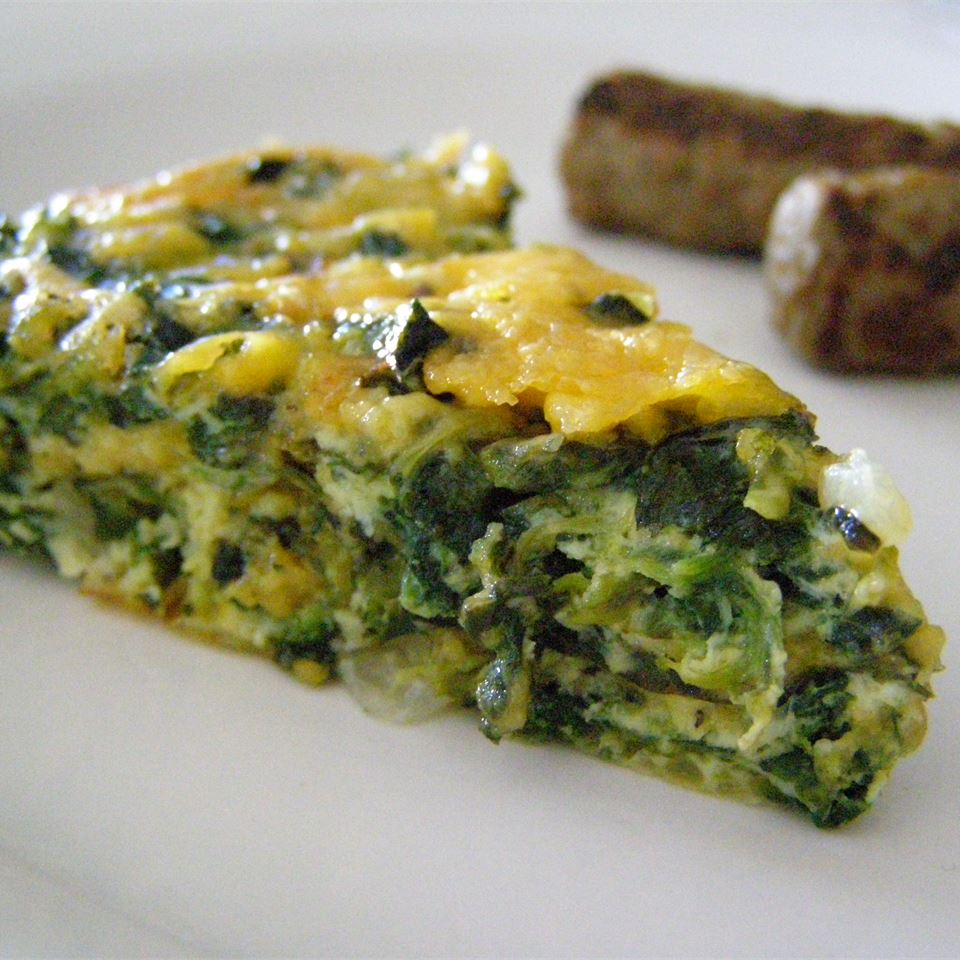

Crustless Spinach Quiche

Description
Cheesy, savory quiche is the perfect addition to any brunch menu. It's easy to make, takes less than an hour, and it's a crowd favorite. When you're in need of a crustless quiche that will brighten up your breakfast or brunch, turn to this tried-and-true recipe.
Ingredients
- 5 eggs
- Frozen spinach
- 1 onion
- Muenster Cheese
- Salt and pepper
Steps
- Sauté the onions until soft, then add the spinach and cook until wilted.
- Whisk eggs, salt, and pepper in a bowl until combined. Add the cheese and spinach mixture to the eggs.
- Pour the quiche mixture into a pie pan and bake until the eggs are cooked through and have set.
Back to recipes